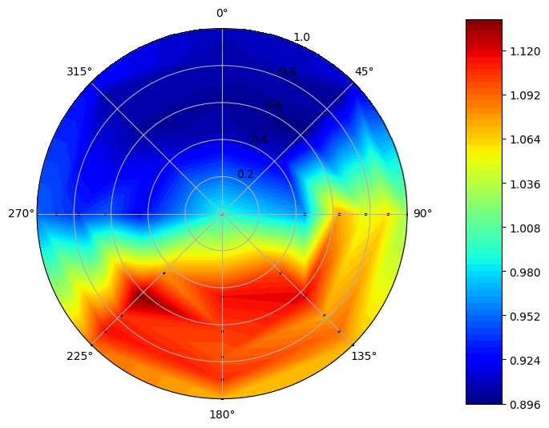

Tutorial for Loading and Visualizing Datasets¶
In [1]:
import distorted as dt
import pandas as pd
This file will demonstrate how to load and visualize datasets using Distorted
Pandas is able to read CSV files, so here we load our dataset CSV into a DataFrame. A dataframe is a representation of a table of data. Column names must be written as the following: “Probe”, “Span”, “Theta (radians)”, “Pressure (kPa)”, and optionally (metric dependent): “Static Pressure (kPa)”, “Velocity m/s”
In [2]:
df = pd.read_csv('data/SAEFigure14NonDimensional.csv')
df.head() # this prints out the first few rows with headers to preview the data
Out[2]:
| Probe | Span | Theta (radians) | Pressure (kPa) | |
|---|---|---|---|---|
| 0 | 1 | 0.4472 | 0.000000 | 0.906 |
| 1 | 2 | 0.4472 | 0.785398 | 0.912 |
| 2 | 3 | 0.4472 | 1.570796 | 0.962 |
| 3 | 4 | 0.4472 | 2.356194 | 1.101 |
| 4 | 5 | 0.4472 | 3.141593 | 1.116 |
To create an object of Distortion, we call the distortion class with the pandas dataframe as the parameter. The dataframe within the object is sorted and columns are renamed.
In [3]:
sample = dt.Distortion(df)
In [4]:
sample.getDF().head() # Use the "getDF" function to retrieve the dataframe within the Distortion object
Out[4]:
| Number | Span | Theta | Total Pressure | |
|---|---|---|---|---|
| 0 | 1 | 0.4472 | 0.0 | 0.906 |
| 1 | 9 | 0.6325 | 0.0 | 0.903 |
| 2 | 17 | 0.7746 | 0.0 | 0.905 |
| 3 | 25 | 0.8944 | 0.0 | 0.906 |
| 4 | 33 | 1.0000 | 0.0 | 0.908 |
We can plot data from the dataframe using the plot_quantity() function, with the parameter being the column name for the data we want to visualize.
In [5]:
sample.plot_quantity('Total Pressure')
